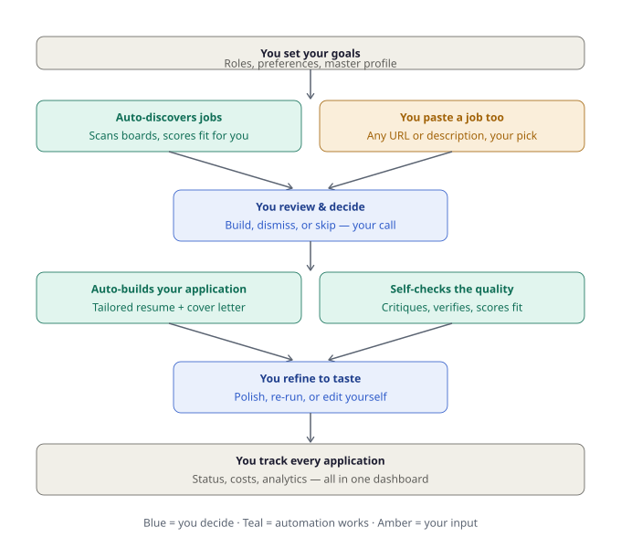

Maestro AI¶
An open-source, AI-powered job-search automation system.
A product of Parseus AI.
Maestro AI automatically discovers jobs that match you, scores them for fit, drafts tailored résumés and cover letters, lets you review and refine everything from a clean dashboard, and tracks every application end to end.
What problem it solves¶
Applying for jobs is repetitive and slow, so most people reach for one of two shortcuts. Both leave real gaps.
Using a GenAI provider — or its agents — by hand. Pasting your résumé into an LLM like ChatGPT, Claude, or Gemini works for a single job, but it puts all the structure on you, every time. Even with their newer agent features, the same problems remain: you re-supply your background for every posting; you're the only one fact-checking, so invented skills and numbers slip through; nothing keeps a structured record of where you applied or what it cost; and the model's hidden memory quietly blends in context you can't see or edit, so each résumé drifts. It's one model, one default behavior — and the output converges on what everyone else's LLM produces.
Using existing job tools. The point tools each solve a slice and leave the rest. Volume auto-appliers blast out generic, templated résumés (and risk your accounts). Trackers and autofill extensions organize applications but don't build or improve anything. Résumé optimizers tune keywords one résumé at a time, with no discovery, no fact-checking, and no cover letters. None of them score jobs for fit, check their own work, or let you control which model and prompt does what.
What both miss. Neither path gives you a system that is systematic (a real pipeline, not one-off prompts), self-checking (something other than you catching fabrications), accountable (every application and its cost tracked in one place), controllable (your models, your prompts, your data), and human-decided (it builds the case; you make the call).
Maestro closes those gaps: it runs a pipeline of specialized agents that discover and score jobs, draft, critique, and fact-check your application — all built from a master profile you curate, with every application and its cost tracked, and the apply decision always left to you.
Why it matters now¶
This isn't a hypothetical edge case — it's the defining frustration of the 2026 job market, and it's getting sharper.
Job seekers feel it as the application black hole: send a hundred tailored applications, hear nothing back. Recruiters feel the other side of it — they're buried in AI-generated résumés that all sound the same. (Resume Now's survey of 925 HR workers found 90% report a surge in low-effort AI submissions.) When everyone uses the same tool with one fixed model and a locked prompt, the output converges: identical summaries, the same action verbs, suspiciously clean formatting. A résumé that reads too perfectly has become a red flag — and the same survey found 62% of employers reject AI résumés that lack personalization.
Then there's the trap almost no one sees. A 2026 peer-reviewed study (arXiv 2509.00462) found that the AI screeners employers use prefer résumés written by the same model — a self-preference bias of 67–82%. Candidates whose tool happened to use the screener's model were 23–60% more likely to be shortlisted, even when quality was identical. That's the difference between a callback and silence — decided not by your experience, but by which model wrote your résumé.
So applicants are caught between two opposing readers: a human recruiter who rejects anything that smells generic, and an AI screener that quietly rewards résumés matching its own model. One default model and one locked prompt lose to both.
Maestro is built for exactly this moment: you vary the model per agent and tune each prompt to your own voice, so your résumé reads like you — distinct enough to pass the human, and not locked to a single model the screener may or may not favor.
How Maestro solves it¶
Maestro is a loop where the automation does the heavy lifting and you make every real decision. You set your goals once, it discovers and scores jobs (or you paste one in), you decide what's worth pursuing, it builds and self-checks the application, you refine to taste, and everything is tracked in one place.

Blue steps are yours; teal steps run automatically; amber is where you hand it a job to work on.
What makes that experience different from the alternatives comes down to a few ideas:
It checks its own work. Most tools hand you a draft and trust you to catch the problems. Maestro runs a Verifier agent that fact-checks every claim against your real history (so it can't invent a skill or a number), and a Critic agent that flags weak or generic writing — before you ever see the result. Checking isn't a step you have to remember; it's built into the pipeline.
You pick the right model for each job, not one model for everything. Scoring hundreds of jobs is cheap, low-stakes work; writing your résumé is expensive, high-stakes work. Maestro lets you assign a cheap fast model to the first and a premium model to the second, so you spend where it counts and the dashboard shows exactly what each run cost. No other tool in this space gives you that lever — most lock you into one model and one price.
You control how each agent behaves. Beyond which model runs a step, you can edit the actual prompt that drives it — tuning it to your background and voice, then resetting to the default whenever you want. That's the difference between output that sounds like a tool and output that sounds like you.
Your context is something you can see and control. Chatbot "memory" quietly blends in things you can't inspect — old drafts, roles you skipped, a salary aside from three chats ago — and that hidden context leaks into every future résumé. Maestro is the opposite: it builds from one master profile you curate, plus the specific job at hand, and nothing else carries over. Same inputs produce the same output, every time, with no contamination you didn't choose.
You make the final call. Maestro never applies for you. It discovers, drafts, critiques, verifies, and scores — it builds the case — but the decision to apply is always yours. And because it's open source and self-hosted, it runs on your machine with your own API keys; your résumé and history never sit on someone else's server.
For the full side-by-side comparison, the per-agent model and control diagrams, and the research behind the sameness problem, see Why Maestro AI? →
Find your way around¶
-
Getting started
Overview · Installation · Configuration · Running the system
-
Reference
Architecture · Database reference · Importing workflows · Troubleshooting
-
Customizing
Prompting & customizing the agents · Your master career dossier
-
Quick answers
What you'll need¶
- A computer running Windows, macOS, or Linux
- Docker Desktop and Node.js 20
- A Google account (a dedicated one is recommended)
- At least one AI provider API key (Anthropic, OpenAI, or Gemini)
First-time setup takes 45–90 minutes, most of it Google account configuration.